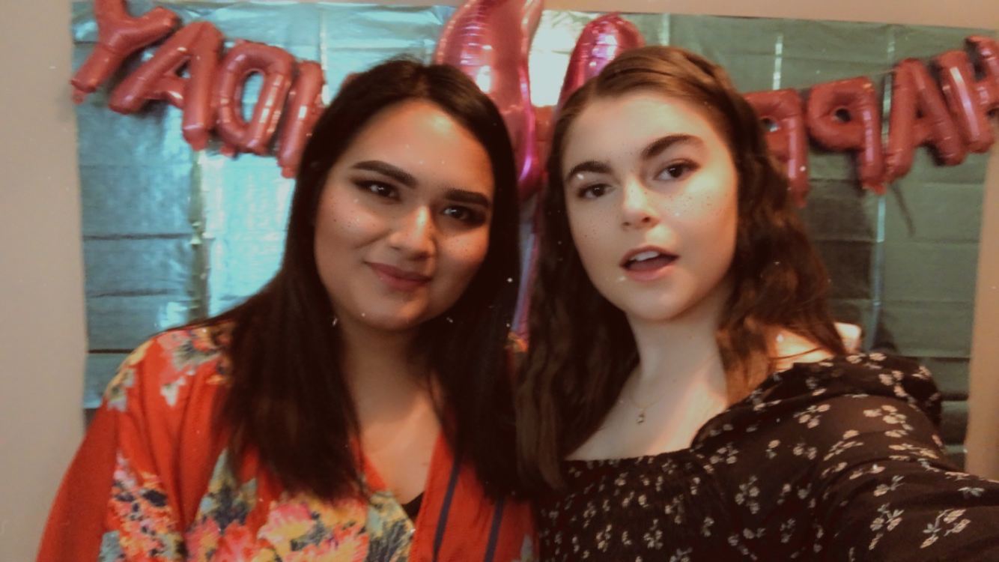

About Me
Biography
My name is Mackenzie Herrlich, I am a junior at James Madison University and I am an aspiring Graphic Designer. I was born and raised in New Jersey. My parents' names are Fred and Tracey. My dad is from Staten Island, NY and my mom is from Stockport, England. I have two brothers; one younger brother, Mark, and one older brother, Stephen. My family and I are very close and without them I wouldn't be where I am today. My parents inspire me to be the best I can and to strive for greatness. I look up to my older brother and it is thanks to him that I have learned that it is okay to fail just as long as you get back up. My younger brother is my best friend and I always look to him for help in whatever I do.
Currently, I am a junior Media Arts and Design major and German minor at James Madison. I was first influenced by my graphic design classes in high school to pick my major. Some of my interests include graphic design, literature, music, and traveling.

This is a picture of me and a friend during my high school graduation.
Interesting Facts
My favorite snack is salt and vinegar chips but only the Herr's brand. My favorite animal is a shark because they are the coolest. Who doesn't love shark week? I love a lot of music and many many different types. Some days I'll listen to Billie Eilish, Hozier, Paramore and other days I will listen to some Glenn Miller, Bing Crosby, the Andrew Sisters. The show that I am currently binging is Parks and Recreation. It is probably the fourth time I am binge watching the show. I am also a huge nerd when it comes to Star Wars. The latest movie still hurts to think about though. *Spoilers* Why would they kill Ben Solo? It's a crime I tell you. I also really love to read. I will read any book I can get my hands on for a cheap price. I will read paperback or on my Kindle app. I mostly like to read fiction novels in any subgenre. Currently I am trying to read Pride and Prejudice and Stalking Jack the Ripper.
This is a picture of a friend and me at a birthday party.
What Inspired this Site
I created this website for an assignment in my Interactive Design for Web I class. This website serves as introduction to who I am and it includes my resume and portfolio. I like minimalistic design and simple hierarchy which heavily influences my design for this site. One of my classmate's website is linked here. One of my favorite websites is a traveling website called Hand Luggage Only. I really like the simple hierarchy and layout of each page. It is simple to navigate and pleasing to the eye. A website that influenced my site is a personal site made by Devon Stank. His design is minimalist and also has simple hierarchy. There are some flaws to his design such as a user may not know to scroll down the site because of the big blocks but the website works well as a simple personal site.